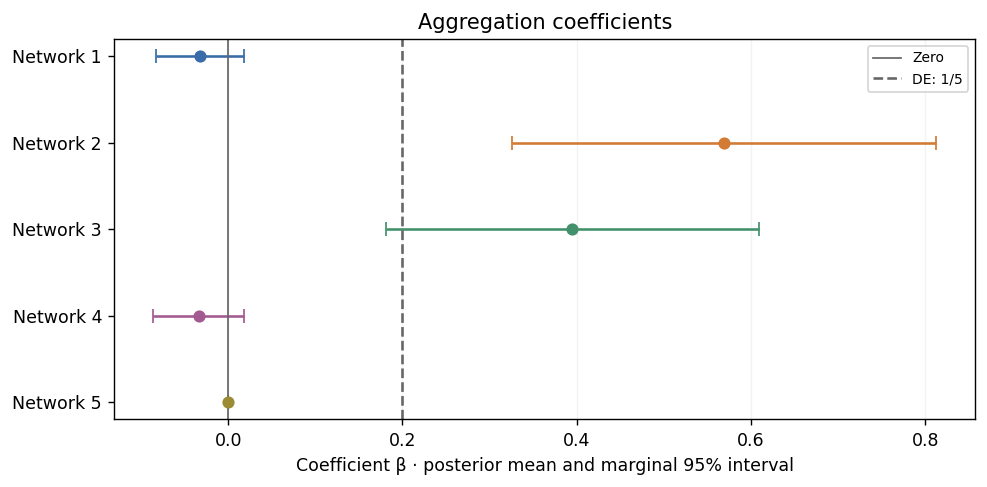
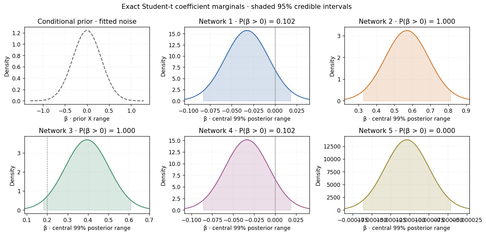
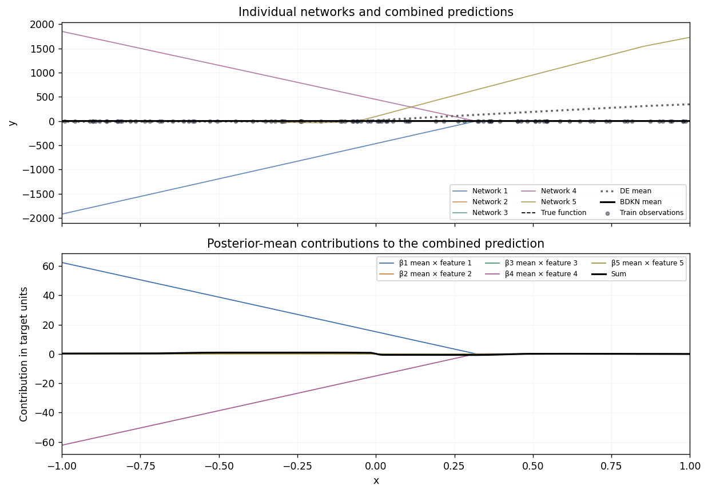
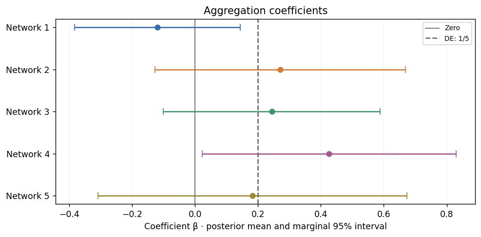
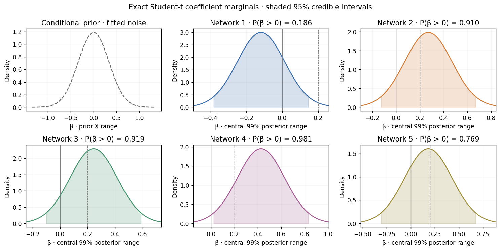
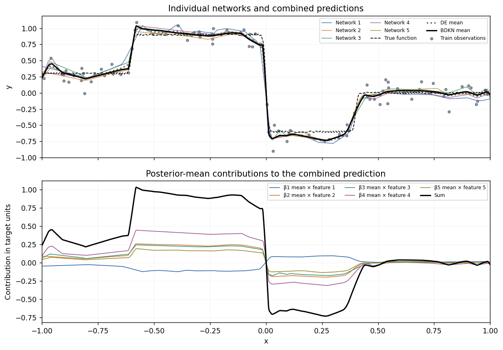
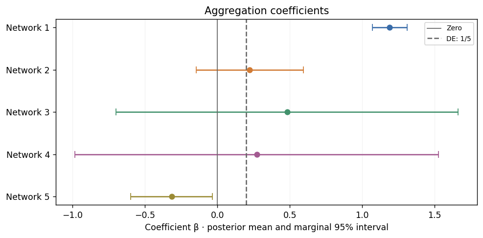
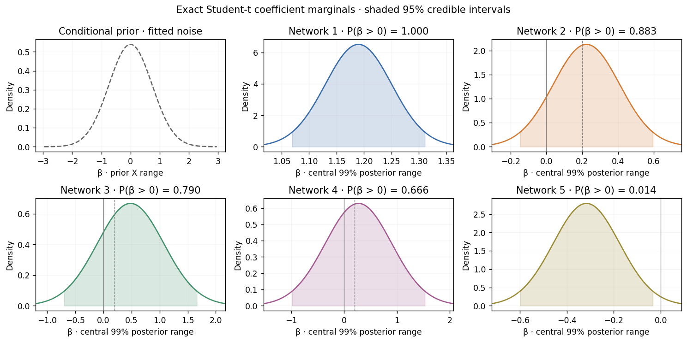
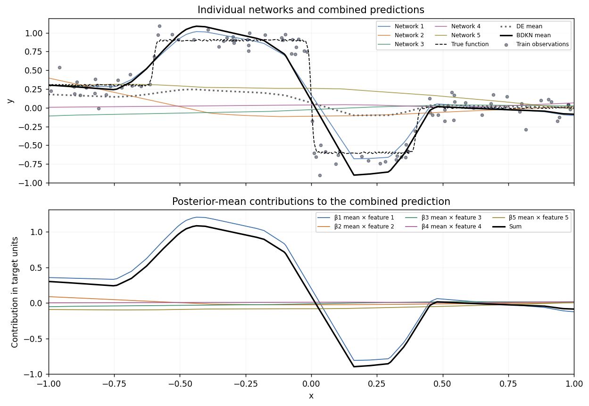

Regression comparison
Download resultsAggregation weights
Coefficients can be negative and need not sum to one. Intervals describe coefficient uncertainty; the dashed reference is DE’s fixed 1/H weight.
BDKN


Each density panel uses its own X range for readability; coefficient intervals above share a common axis. Prior reference conditions on fitted noise. Contribution shares use held-out inputs; test targets are used only for scoring.
| Network | β mean | 95% low | 95% high | P(β > 0) | Contribution share | Test RMSE | Test NLL |
|---|---|---|---|---|---|---|---|
| 1 | 0.11707 | -0.36801 | 0.60216 | 0.68344 | 0.10770 | 0.11461 | -0.64127 |
| 2 | 0.43255 | -0.08743 | 0.95254 | 0.94900 | 0.38807 | 0.11114 | -0.56796 |
| 3 | -0.04553 | -0.49600 | 0.40493 | 0.42073 | 0.04237 | 0.11567 | -0.35127 |
| 4 | 0.34541 | -0.08476 | 0.77558 | 0.94285 | 0.32373 | 0.12007 | -0.17405 |
| 5 | 0.14943 | -0.38309 | 0.68194 | 0.71052 | 0.13813 | 0.11541 | -0.42316 |
Functional repulsion · BDKN



Each density panel uses its own X range for readability; coefficient intervals above share a common axis. Prior reference conditions on fitted noise. Contribution shares use held-out inputs; test targets are used only for scoring.
| Network | β mean | 95% low | 95% high | P(β > 0) | Contribution share | Test RMSE | Test NLL |
|---|---|---|---|---|---|---|---|
| 1 | -0.03242 | -0.08267 | 0.01783 | 0.10174 | 0.49332 | 877.12697 | 8.86334 |
| 2 | 0.56908 | 0.32567 | 0.81249 | 0.99999 | 0.00654 | 0.13285 | -0.27287 |
| 3 | 0.39479 | 0.18098 | 0.60859 | 0.99980 | 0.00595 | 0.24764 | -0.21561 |
| 4 | -0.03363 | -0.08578 | 0.01853 | 0.10190 | 0.49288 | 844.58966 | 8.27578 |
| 5 | -0.00010 | -0.00016 | -0.00005 | 0.00026 | 0.00132 | 775.01285 | 8.53972 |
Weight repulsion · BDKN



Each density panel uses its own X range for readability; coefficient intervals above share a common axis. Prior reference conditions on fitted noise. Contribution shares use held-out inputs; test targets are used only for scoring.
| Network | β mean | 95% low | 95% high | P(β > 0) | Contribution share | Test RMSE | Test NLL |
|---|---|---|---|---|---|---|---|
| 1 | -0.11892 | -0.38232 | 0.14449 | 0.18629 | 0.09946 | 0.13262 | -0.38800 |
| 2 | 0.27121 | -0.12696 | 0.66938 | 0.91019 | 0.20965 | 0.11620 | -0.45385 |
| 3 | 0.24387 | -0.10036 | 0.58809 | 0.91852 | 0.19994 | 0.12101 | -0.34182 |
| 4 | 0.42646 | 0.02234 | 0.83059 | 0.98059 | 0.34790 | 0.12204 | -0.20665 |
| 5 | 0.18294 | -0.30839 | 0.67428 | 0.76910 | 0.14305 | 0.11197 | 0.00575 |
First-order repulsion · BDKN



Each density panel uses its own X range for readability; coefficient intervals above share a common axis. Prior reference conditions on fitted noise. Contribution shares use held-out inputs; test targets are used only for scoring.
| Network | β mean | 95% low | 95% high | P(β > 0) | Contribution share | Test RMSE | Test NLL |
|---|---|---|---|---|---|---|---|
| 1 | 1.19000 | 1.06905 | 1.31095 | 1.00000 | 0.80334 | 0.19388 | -0.40513 |
| 2 | 0.22373 | -0.14694 | 0.59441 | 0.88303 | 0.03654 | 0.57051 | 0.31500 |
| 3 | 0.48196 | -0.69861 | 1.66253 | 0.79005 | 0.03751 | 0.60821 | 0.48152 |
| 4 | 0.27249 | -0.98245 | 1.52743 | 0.66623 | 0.01173 | 0.56426 | 0.39932 |
| 5 | -0.31644 | -0.59888 | -0.03400 | 0.01424 | 0.11087 | 0.50415 | 0.31164 |